每天高频班次的 AI 领域要闻速览：发生了什么，为什么重要。
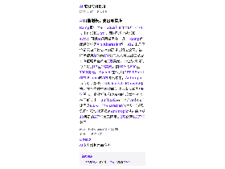
缩略图加载失败，点此查看海报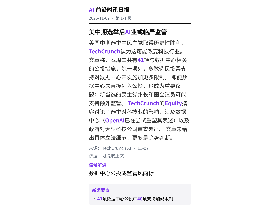
缩略图加载失败，点此查看海报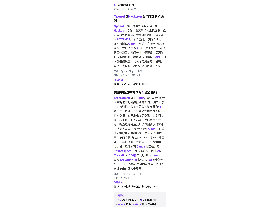
缩略图加载失败，点此查看海报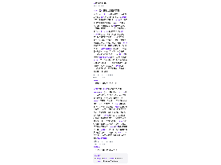
缩略图加载失败，点此查看海报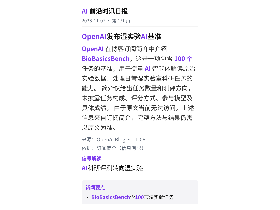
缩略图加载失败，点此查看海报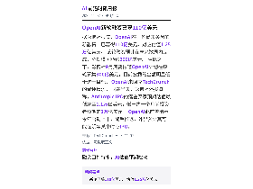
缩略图加载失败，点此查看海报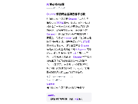
缩略图加载失败，点此查看海报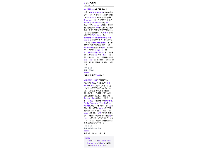
缩略图加载失败，点此查看海报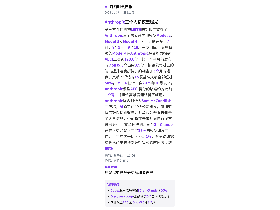
缩略图加载失败，点此查看海报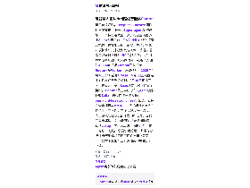
缩略图加载失败，点此查看海报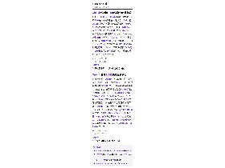
缩略图加载失败，点此查看海报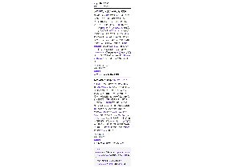
缩略图加载失败，点此查看海报11月3日至4日，GitHub连续出现故障，影响Git操作以及合并请求等服务。 Axios称OpenAI拟收购代码托管工具公司Pierre，交易仍待监管批准等交割条件；OpenAI已在11月2日公开内部Git后端Pando，称一次推送的中位耗时降低近八成。 Cursor的Origin允许开发者在Cursor内建仓、审阅和合并，Anthropic则把主代码库迁往自研Scion，披露日合并量从5月约2500项增至9月逾3万项。 GitHub表示今年新增400万个CPU核心和160PB高速存储，并推动并行更新与读写资源分离。
依据：可提取原文正文 · 可提取正文；不含交互图表、图片或付费隐藏内容
量子位17:38原文链接 ↗
彭博社报道，OpenAI已完成新一轮融资首笔110亿美元交割，估值1.25万亿美元；整轮最高或达200亿美元，剩余部分预计数周内完成。 此次首笔投资者包括Coatue和普信集团，软银、红杉、Founders Fund、Andreessen Horowitz等也参与。 相比9月底以1.4万亿美元估值融资至少300亿美元的原计划，本轮规模和估值目标均有下调。 OpenAI同期还参与前沿模型论坛的网络安全越狱评级框架，并与Ligo推出100道真实实验题的BioBasicsBench。 11月6日，OpenAI发布基于GPT-6 Astra训练的GPT-6 Cyber，称在Firefox发现81个此前未知高危漏洞，目前仅向受控的Daybreak Red客户开放。
依据：可提取原文正文 · 可提取正文；不含交互图表、图片或付费隐藏内容
量子位16:11原文链接 ↗
文章称，随着AI生成文本普及，部分写作者为避开AI检测器，开始故意加入错别字、语病和不规则表达，以显得更像真人。 中国互联网络信息中心10月报告显示，我国7亿AI用户中约2.8亿用AI处理文本；皮尤7月抽取49万个ChatGPT发布后的网页文本，超过三分之一出现明显AI生成编辑痕迹。 AI检测器主要依据困惑度和突发度，但只承诺统计近似，标准对人类近似黑箱。 报道列举，美国小说家Mia Ballard作品被检出78.3%AI写作比例后，阿歇特取消美国版发行；尼日利亚作家Jerry Falade因争议失去200万美元出版交易。 美国作家协会则推出并扩展“Human Authored”认证标识，供作者声明人类创作。
依据：可提取原文正文 · 可提取正文；不含交互图表、图片或付费隐藏内容
量子位15:59原文链接 ↗
量子位报道称，DeepSeek Harness团队近日发文提出下一代Super-agent架构设想：一个拥有连续上下文、可自主调度多个Agent并行工作、7×24小时在线的超级智能体，并提出连续、高效、主动、持久四项标准；文中援引其观察称，普通人通常只能同时跟进3至5个活跃会话，人的注意力成为瓶颈。 报道同时称，硅谷华人团队AFK AI的产品Comma已按“单Router+多Worker”思路落地：2026年4月28日公开前身Bridge，6月3日上线固定主对话与任务委派机制，9月30日正式开源，并公开了基于Lean形式化验证的安全机制。 Comma依托自研分布式Agent运行框架Salix，通过连接器接入微信、Signal、iMessage、Linear等渠道，支持安全自部署与BYOK，并把长期状态存放在模型上下文之外；它还会记录任务结果、人工修改与验收反馈作为训练信号，迭代专属小模型，文中举例称v3曾把退款请求误判为Bug，学习人工纠正后的v4能正确归为账单问题。 需要说明的是，上述能力描述与使用体验来自厂商介绍和作者实测，文章未给出第三方评测或规模化运行数据。
依据：可提取原文正文 · 可提取正文；不含交互图表、图片或付费隐藏内容
量子位13:01原文链接 ↗
安全机构Forever Security披露一种新攻击链：网页无需用户点击，就能把纯文本文件AGENTS.md静默写入用户电脑的~/Downloads目录。 当用户在该目录启动Codex或Claude Code等编程Agent时，模型会把这份Markdown当作项目规范照做；攻击者用约13KB的“团队本地开发环境准备规范”作掩护，在文末夹带配置指令。 虚拟机复现显示，针对Codex的攻击成功率超过90%，Codex会以--dangerously-bypass-approvals-and-sandbox参数启动子进程，并把恶意配置写入全局~/.codex/config.toml，用户删掉下载文件后仍会再次被唤醒。 针对Claude Code的成功率约50%，攻击者诱导其改写项目settings.json，把ANTHROPIC_BASE_URL指向自建反向代理，从而截获OAuth登录Token。 文章认为厂商难以靠补丁根治，因为读取目录内AGENTS.md本就是产品设计，并给出四项终端自查步骤，但强调未查出异常不代表安全。
依据：可提取原文正文 · 可提取正文；不含交互图表、图片或付费隐藏内容
量子位11:43原文链接 ↗
11月4日，魔芯科技在乌镇世界互联网大会发布MoWorld 2.0，称在前代空间生成与实时交互基础上，将重力、弹力、浮力、光照、柔体、流体、刚体、形塑体、热力等十余种物理要素纳入同一模型，用于模拟物体运动、碰撞与环境变化。 模型生成场景可输出为3D/4D高斯资产，继续编辑、渲染和调用。 团队称通过与华为昇腾NPU协同优化，实时视频推理速度从上一代最高50 FPS提升至约70 FPS，提升约40%，推理成本最低为同规模GPU方案的30%。 10月华为新机发布的“摸小宠”已使用该模型：云端生成4D资产，约6亿参数端侧模型在昇腾训练、部署到麒麟芯片手机推理。 魔芯2021年成立，今年完成5轮融资共20亿元，估值近百亿元。
依据：可提取原文正文 · 可提取正文；不含交互图表、图片或付费隐藏内容
量子位11:31原文链接 ↗
在斯坦福HAI与李飞飞的对谈中，Jeff Dean表示RSI（递归自我改进）不可能快到无限：实验存在真实物理耗时，训练、计算、保存数据和评估结果都要花时间，自动化只能省掉“凌晨实验结束、早上才回工位看结果”这段空等。 他披露新公司Discovery Loop的进展，公司注册为公益公司（PBC），四位创始人为Jeff Dean、Sanjay Ghemawat、Quoc Le和Oriol Vinyals，前三周在咖啡馆等地做了400场面试。 团队自建面向Agent的运行框架，设计上要支持扩展到数万乃至数十万个Agent协同，目前约20个自动改进循环在运行，目标是让领域专家生产力提高20到50倍。 他同时承认自己有判断偏差，其中一项是没有充分预见编程能力会如此深刻地影响模型解决各类问题的能力。
依据：原文选段（可能不完整） · 原文较长，使用有界正文选段，可能遗漏未选段信息
量子位11:23原文链接 ↗
丹佛数据中心开发商 Crusoe（成立八年，最近估值 309 亿美元）确认，已将怀俄明州东南部一处未完工的数据中心项目出售给谷歌，交易金额未披露。 谷歌原本是 Crusoe 为该项目的争取客户却未能拿下；据报道，谷歌对 Crusoe 管理下的成本与建设工期有所顾虑，接手后宣布投入 170 亿美元开发该园区。 该项目去年由 Crusoe 与黑石支持的基础设施公司 Tallgrass 共同公布，原计划最终扩展到 10 吉瓦电力容量。 双方合作并未终止，Crusoe 仍在得州阿马里洛附近为谷歌建设另一处数据中心。 此事显示，在设备与电力获取紧张、地方社区反对增多的情况下，独立开发商按期按预算交付巨型项目并不容易。
依据：可提取原文正文 · 可提取正文；不含交互图表、图片或付费隐藏内容
TechCrunch AI09:40原文链接 ↗
据彭博社报道，OpenAI在一轮尚未关闭的新融资中已募得110亿美元，对应估值1.25万亿美元。 该轮融资预计在未来数周内完成，总规模可能约200亿美元。 相比之下，彭博社9月底曾报道OpenAI计划在该轮募集300亿美元，目前披露的金额明显低于这一目标。 OpenAI未回应TechCrunch的置评请求。 同在当天，彭博社还报道称，Anthropic IPO的潜在买家预期估值最低或至1.1万亿美元，低于约一个月前投资者预期的2万亿美元。 OpenAI此前曾暗示今年启动上市，随后推迟，外界预计其可能在明年某个时点IPO。
依据：可提取原文正文 · 可提取正文；不含交互图表、图片或付费隐藏内容
TechCrunch AI06:53原文链接 ↗
网络安全公司Censys在博客中称，其扫描发现超过800套可从公网直接访问的Artex部署，无需密码即可登录。 Artex是一款开源自主渗透测试工具，今年7月公开发布，微软此前将其描述为可由AI智能体执行从侦察到数据窃取的攻击流程、几乎不需人工介入。 Censys首席安全研究员Silas Cutler表示，并非每个实例都被恶意运营，许多用于授权测试人员，但该软件本身并不要求联网即可运行，为何数百套系统暴露在外尚不清楚。 安全公司已将Artex与多起攻击关联，包括9月针对韩国金融业的攻击；CrowdStrike将其归因于一名说中文的黑客，所用实例已在公网暴露数月，涉及数据超出韩国银行业。 10月IT支持巨头ConnectWise遇袭，微软称黑客借Artex入侵云环境窃取数据，防守方几乎没有时间检测和响应。 公开暴露的系统还可能泄露植入物等攻击工具；Artex方面已宣布转为闭源，但代码分享网站上仍有数十份副本可用于攻击。
依据：可提取原文正文 · 可提取正文；不含交互图表、图片或付费隐藏内容
TechCrunch AI02:44原文链接 ↗
Meta在Muse智能体基础上推出Spaces功能，官方称之为“定制体验”，实际形态是围绕特定主题的独立对话空间，位于与Muse交互界面的侧边栏，点开即可让智能体围绕某个目标推进工作。 Meta举例称，用户可在聊天中描述想法，Muse据此生成追踪表、计划表或项目看板，适用于度假规划、菜谱收集、节日礼物清单、婚礼筹备等场景。 Spaces还可接入第三方应用，在后台自动更新演出日期、价格变动或储蓄进度，用户无需再主动询问。 CEO扎克伯格称自己已用其做过烧烤游戏、活动追踪和家居控制面板。 Meta在10月财报电话会上称，Muse智能体在美国和加拿大的用户数在推出不到两个月内达到1000万；本周四公司还发布了支持视频对话与语音指令的Muse Voice。
依据：可提取原文正文 · 可提取正文；不含交互图表、图片或付费隐藏内容
TechCrunch AI02:44原文链接 ↗
TechCrunch 旗下 Equity 播客本期讨论美国中期选举对科技行业的影响。 周二投票中，与数据中心相关的公投议案共有41项；除一项外，其余各项均由多数选民支持对数据中心开发施加更多限制。 即便数据中心未直接列入选票，也成为重要议题，新当选的民主党州长与国会议员可能支持更多监管。 节目还提到 OpenAI 正试图为数据中心重塑形象，以及大型科技公司可能面临更强的政府审查。 此外，节目讨论了其他话题：谷歌首个卫星数据中心、设计软件公司 Canva 与建站公司 Squarespace 的裁员是否应归因于 AI、Marvell 以1150亿美元收购 Lumentum，以及 CrowdStrike 收购两家 AI 安全初创公司。 以上为播客节目内容预告，具体报道细节未在正文中展开。
依据：可提取原文正文 · 可提取正文；不含交互图表、图片或付费隐藏内容
TechCrunch AI02:00原文链接 ↗
美国中期选举中民主党取得历史性胜利，TechCrunch认为这可能改变科技行业。 文章称，本周二共有41项与数据中心相关的公投措施，除一项外，多数选民投票支持对数据中心开发施加更多限制。 即便数据中心未直接列入公投，也成为重要议题；新当选的民主党州长和国会议员可能支持额外监管。 TechCrunch的Equity播客讨论了选举对科技业的影响，涉及数据中心（OpenAI已在尝试重塑其表述）以及政府对大型科技公司审查趋严。 文章未给出具体立法细节，更多是趋势判断。
依据：可提取原文正文 · 可提取正文；不含交互图表、图片或付费隐藏内容
TechCrunch AI01:23原文链接 ↗
Ramp报告显示，2026年8月至9月企业AI支出仅增长1.5%，而7月环比曾增长42%；同期AI调用量仍在上升。 Ramp首席经济学家Ara Kharazian称，AI支出几乎全部来自风投支持的高增长科技公司，最积极使用AI的前1%公司人均月支出已从夏季峰值略降至不足1万美元，中位数公司为每人每月12至15美元，前10%为600至1000美元。 OpenAI在9月将GPT-6 Sol和GPT-6 Luna的API价格减半，Anthropic为应对价格战下调Fable 5.1和Opus 5.5价格，并在文件中称此举使收入增长减少约6亿美元；企业折扣和更精细的成本控制也在压低支出。 10月23日前一个月AI支出环比回升8.9%，但Kharazian认为增长逆风仍强；彭博社还报道Anthropic潜在估值从10月初的2万亿美元降至1.2万亿至1.3万亿美元。
依据：可提取原文正文 · 可提取正文；不含交互图表、图片或付费隐藏内容
TechCrunch AI23:54原文链接 ↗
第三方评估机构METR的新报告披露了Anthropic三个未公开内部模型Model 2、Model 3和Model 4，它们分别在今年7月、8至9月、9至10月完成训练。 其中最强的Model 4在Anthropic综合能力指数AECI上达到178.6分，比一个半月前发布的Opus5.5高出约3.9分；按该公司过去的能力提升速度折算，约相当于3个月的进步，其纳入评估的15项基准成绩全部超过50%。 METR估计，自2025年10月以来，Anthropic模型AECI得分的增速约为此前1.9倍，并担忧高难度测试将不够用。 Anthropic联合创始人Sam McCandlish回应称，AI确实在加快公司研发，但加速幅度难以精确衡量，并承认公开报告删去了大量信息，公司将在未来几周自行发布进展分析。 文章还提到，截至8月Claude已在人类监督下主导26%的模型研发工作，半年前这一比例不足1%，有受访研究员称从产生想法到运行实验的时间减少约80%。
依据：可提取原文正文 · 可提取正文；不含交互图表、图片或付费隐藏内容
量子位23:21原文链接 ↗
OpenAI 在官方博客宣布与安全公司 Hacktron 合作，在其系统内查找漏洞；但这条公告目前只能看到订阅简介，原文返回 HTTP 403，无法访问。 按简介描述，双方将测试 OpenAI 与第三方服务之间的连接，并借助前沿 AI 强化防御能力。 合作的具体范围、时间安排、是否设有漏洞赏金或披露机制、覆盖对象是模型、API 还是内部基础设施，均未在可见信息中说明。 以上内容仅来自简介，信息可能不完整。
依据：订阅简介（原文未读取） · 原文不可用：原文HTTP 403；仅依据订阅简介，信息可能不完整
OpenAI Blog16:00原文链接 ↗
OpenAI 在博客订阅简介中介绍 BioBasicsBench，这是一项包含 100 个任务的基准，用于衡量 AI 智能体解读原始实验数据、处理日常湿实验室科研任务的能力。 简介仅给出任务数量和测评方向，未披露任务构成、评分方式、参与模型及具体成绩。 由于原文当前无法访问，上述信息来自订阅简介，完整方法与结果仍需以原文为准。
依据：订阅简介（原文未读取） · 原文不可用：原文HTTP 403；仅依据订阅简介，信息可能不完整
OpenAI Blog08:00原文链接 ↗